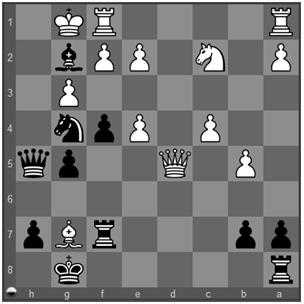

Bloqueio: Você concretiza o tema tático Bloqueio (Blocking) quando força uma peça do adversário a ocupar uma casa para a qual outra peça (comumente o rei) poderia se mover. O lance forçante é frequentemente um Sacrifício. O Bloqueio difere da Interferência pois esta bloqueia a atuação de uma peça do adversário sobre outra peça dele, ou sobre uma casa importante, enquanto que o Bloqueio impede a ocupação de uma casa previamente livre para ser utilizada.

1. Rxg2
O negro não pode dar xeque mate em "h2" pois o rei branco escaparia para "f3".
1... f3+
e, devido a isso, sacrifica um peão em "f3"
2. exf3
que o branco é obrigado a tomar. Agora a casa de escape "f3" está bloqueada
2... Dh2#
e o negro pode dar xeque mate. 0-1